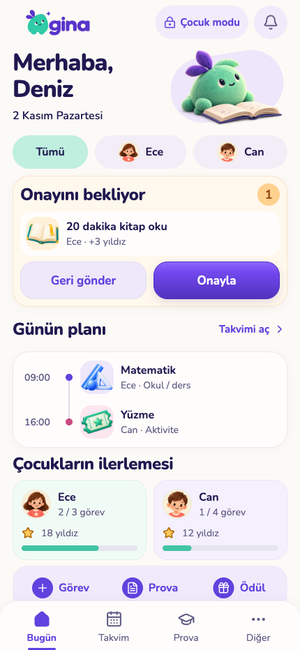
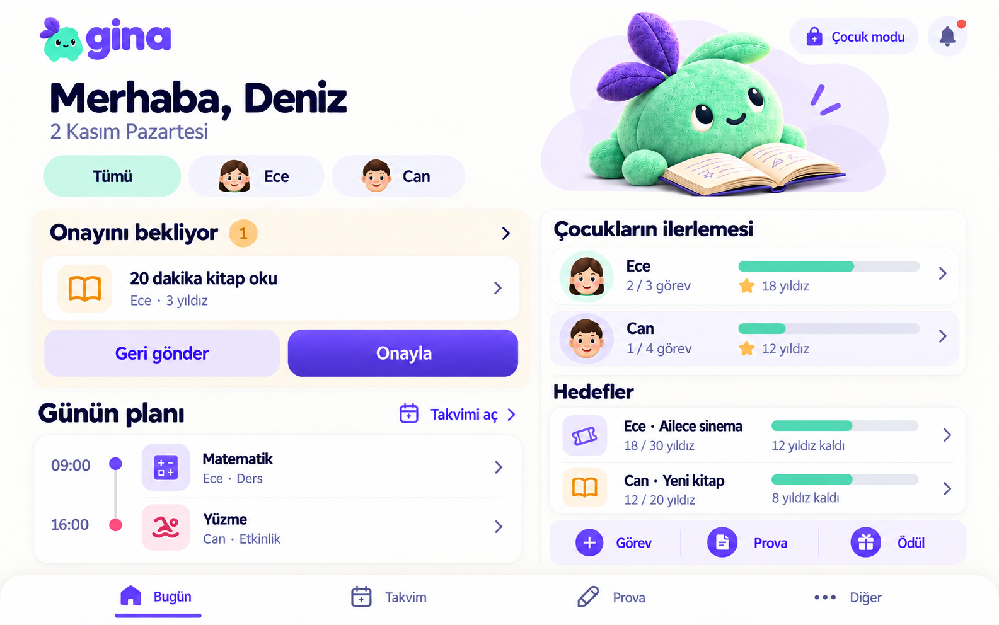
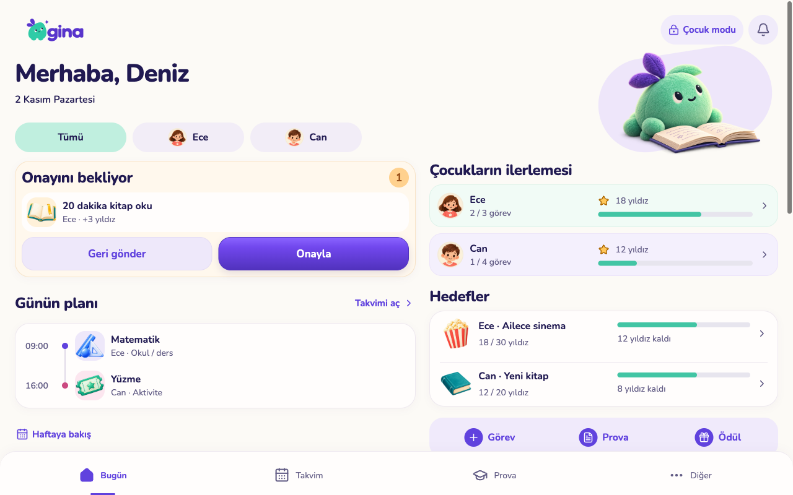
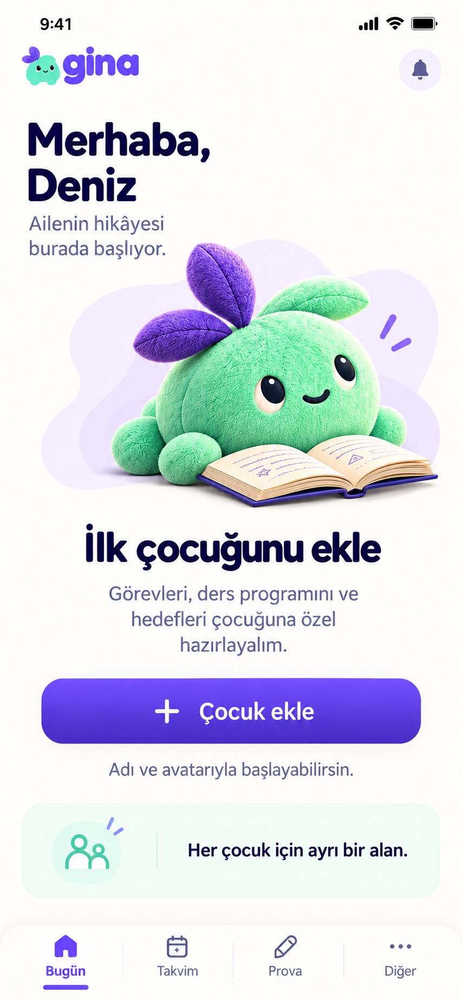
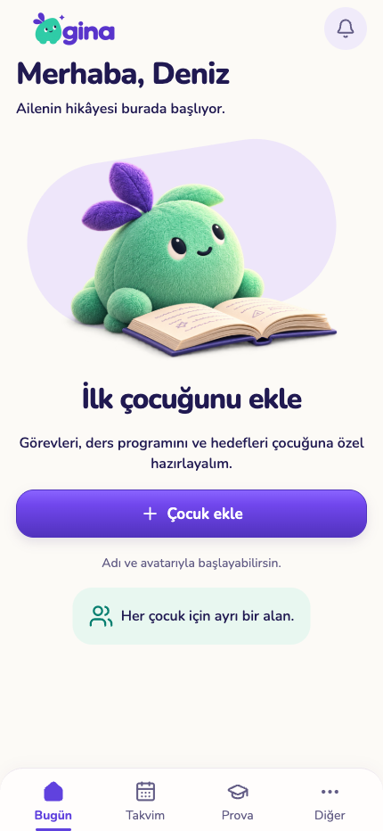
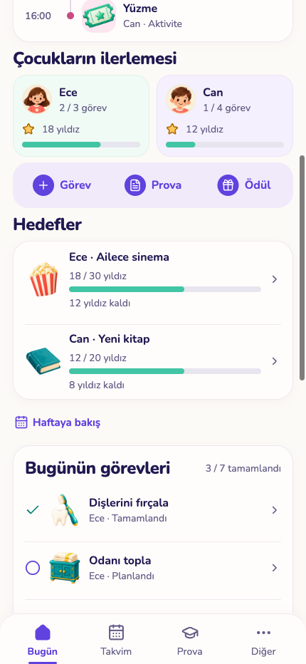
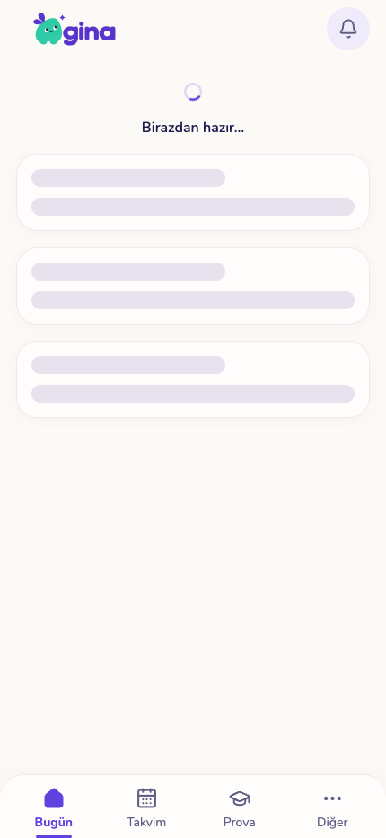
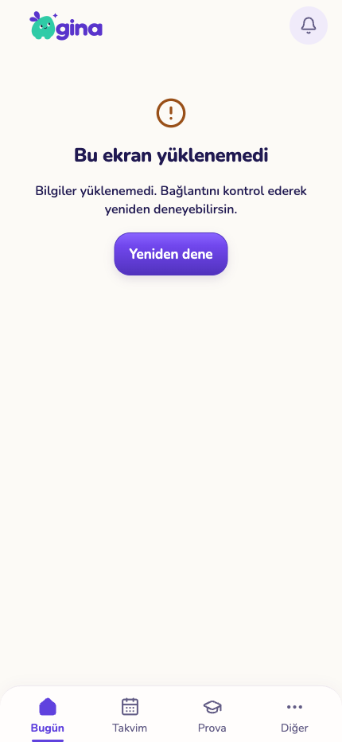
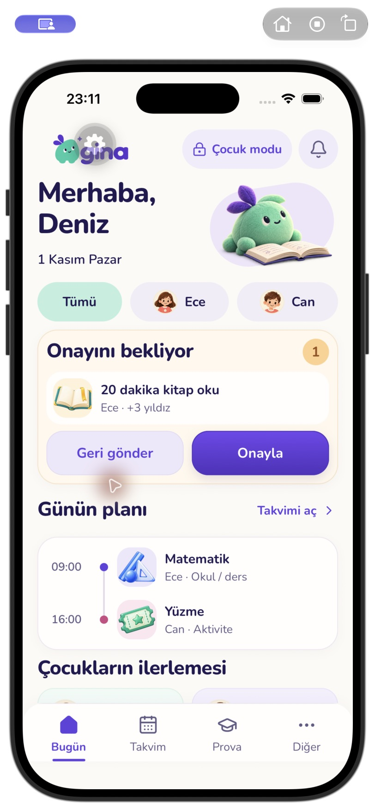

Veli ana ekranı
Solda onaylı tasarım maketi, sağda çalışan uygulamanın izole örnek verilerle alınmış web ekranı. Uygulamada özgün logo, maskot ve mevcut resimli ikonlar kullanılır. Bunlar TestFlight ekranları değildir.
Telefon
Onaylı maket Uygulama · 430×932
Uygulama · 430×932
Tablet
Onaylı maket
Uygulama web · 1280×800
İlk çocuk ekleme
Onaylı maket
Uygulama
Devam ve durumlar
Aşağı kaydırılan içerik
Yükleniyor
Hata ve tekrar deneme
Native iOS doğrulaması
iPhone 17 Pro simülatörü, iOS 26.5. Bu kare simülatör çerçevesi ve geliştirme düğmesini içerir; fiziksel cihaz veya mağaza ekran görüntüsü değildir.

Kapsam, kontroller ve sınırlamalar